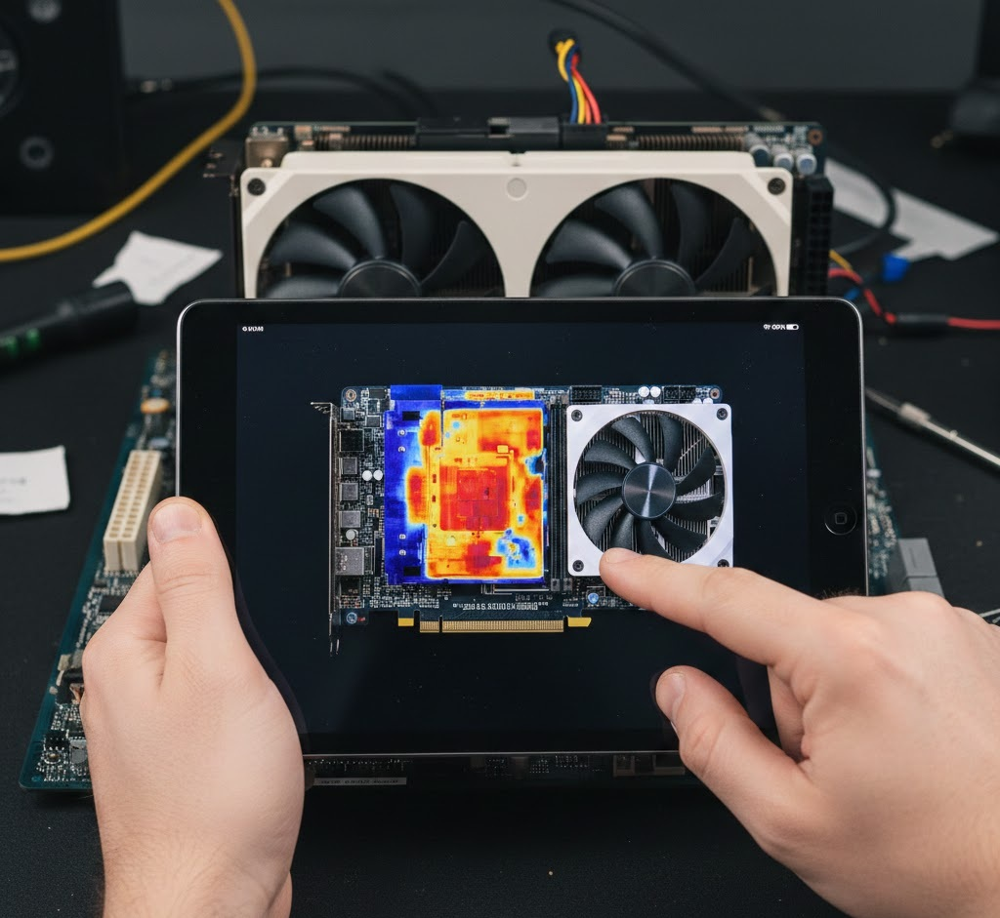

In our testing today at the GearVerify lab, we encountered a specific issue where a user's RTX 4080
was perfectly stable for the first 90 minutes of gameplay but would reliably black-screen at the
2-hour mark. The Core Temperature was a chilly 65°C. The VRAM was 72°C. The issue? The Voltage
Regulator Modules (VRMs) were silently roasting at 115°C.
[0.0s]Initializing GPU...[0.2s] Compute Shader Dispatch: OK
[0.8s]Stress Loop Complete. No artifacts detected.
Most monitoring software focuses on the "Glamour Specs"—Core Clock and Core Temp. But the dedicated
power delivery phases (MOSFETs) are the unsung heroes. If they overheat, they lose efficiency,
delivering "dirty" power with ripple voltage that destablizes the core.

1. The Efficiency Curve
VRMs have an efficiency curve. At 40°C, a high-quality DrMOS power stage might be 96% efficient. At
100°C, that might drop to 92%. That 4% loss is dissipated as more heat, creating a thermal
runaway effect known as "Thermal Soak."
Cheap thermal pads are often the culprit. Manufacturers save pennies by using pads that bleed oil or
dry out, leaving an air gap between the MOSFET and the heatsink.
2. Detecting the Invisible Crash
Since most cards lack VRM temp sensors accessible to the OS, you diagnose this by symptom. A VRM
crash is usually instant. No artifacts, no stutter—just a black screen and fans ramping to 100% as
the safety trip triggers.
[SYSTEM_EVENT] - Kernel-Power 41. The system has rebooted without cleanly shutting down first.
Cause: HARDWARE_TRIP.
3. The Backplate Trap
Many "Premium" cards use plastic backplates. Plastic is an insulator. It traps heat on the back of
the PCB where the VRMs are soldered. A quality card uses a metal backplate with thermal pads
connecting to the hot zones.
Component
Safe Operating Temp
Throttling Point
GPU Core
< 83°C
84°C
GDDR6X VRAM
< 95°C
110°C
VRM (MOSFETs)
< 100°C
125°C (Safety Trip)
Expert Tip: The "Fan Stop" Feature
Disable "0dB Fan Mode" for diagnostics. Passive airflow is rarely enough to cool VRMs under idle
load if the case ambient temp is high. Keep fans spinning at a minimum 30% to ensure constant
airflow over the heatsink fins.
4. Laboratory Final Thoughts
If your GPU is crashing after long sessions, touch the backplate (carefully). If it burns your finger
instantly, you have a thermal soak issue. It's time to open the card and replace those stock thermal
pads with high-performance aftermarket ones.
Technical Specifications // Standard Graphics AdapterVERIFIED